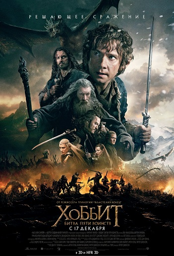

«Хо́ббит» — поставленная режиссёром Питером Джексоном серия из трёх связанных единым сюжетом кинофильмов, представляющая собой экранизацию повести Дж. Р. Р. Толкина «Хоббит, или Туда и обратно».
Трилогия состоит из фильмов:
- «Хоббит: Нежданное путешествие»(The Hobbit: An Unexpected Journey, 2012)
- «Хоббит: Пустошь Смауга»(The Hobbit: The Desolation of Smaug, 2013)
- «Хоббит: Битва пяти воинств»(The Hobbit: The Battle of the Five Armies, 2014).
Является хронологически последовательным приквелом кинотрилогии «Властелин колец»
Содержание

Трилогия
Фильмы являются вольной экранизацией повести Толкина «Хоббит, или Туда и обратно». Они рассказывают нам о приключениях хоббита Бильбо Бэггинса и тринадцати гномов по пути к Одинокой горе, а также являются приквелом к кинотрилогии «Властелин колец». Фильмы трилогии «Хоббит» были приняты зрителями и критиками гораздо прохладнее, чем «Властелин колец», который собрал ряд значимых наград мирового кинематографа.«Хо́ббит: Нежда́нное путеше́ствие» (англ. The Hobbit: An Unexpected Journey) — приключенческий фильм в жанре эпического фэнтези 2012 года режиссёра Питера Джексона по сценарию Фрэн Уолш, Филиппы Бойенс, Джексона и Гильермо дель Торо, основанный на повести Дж. Р. Р. Толкина «Хоббит, или Туда и обратно». Действие происходит в
Хоббит: Нежданное путешествие
Мировая премьера фильма «Хоббит: Нежданное путешествие» состоялась 28 ноября 2012 года в Веллингтоне, Новая Зеландия[2]. 12 декабря фильм вышел в прокат в Новой Зеландии, 13 декабря — в Великобритании, 14 декабря — в США[3].«Хо́ббит: Нежда́нное путеше́ствие» (англ. The Hobbit: An Unexpected Journey) — приключенческий фильм в жанре эпического фэнтези 2012 года режиссёра Питера Джексона по сценарию Фрэн Уолш, Филиппы Бойенс, Джексона и Гильермо дель Торо, основанный на повести Дж. Р. Р. Толкина «Хоббит, или Туда и обратно». Это первый фильм трилогии «Хоббит», выступающей в качестве приквела к трилогии Джексона «Властелин колец». Действие происходит в Средиземье за шестьдесят лет до основных событий трилогии «Властелин колец», части фильма адаптированы из приложений к «Возвращению короля»[7]. Фильм рассказывает историю Бильбо Бэггинса (Мартин Фримен), которого волшебник Гэндальф (Иэн Маккеллен) убедил сопровождать тринадцать гномов во главе с Торином Дубощитом (Ричард Армитидж) в поисках Одинокой горы, чтобы вернуть её у дракона Смауга. В актёрский состав также входят Кен Стотт, Кейт Бланшетт, Иэн Холм, Кристофер Ли, Хьюго Уивинг, Джеймс Несбитт, Элайджа Вуд и Энди Серкис, а также Сильвестр Маккой, Барри Хамфрис и Ману Беннетт. Премьера фильма 28 ноября 2012 года состоялась в Веллингтоне, а затем 12 декабря в Новой Зеландии, 14 декабря в США и 19 декабря в России компанией Warner Bros. Pictures, спустя почти девять лет после выхода фильма «Властелин колец: Возвращение короля»[8]. Фильм получил смешанные отзывы от критиков и заработал более 1,017 миллиарда долларов в прокате, что делает его четвёртым кассовым фильмом 2012 года. Фильм получил множество наград; на 85-й церемонии вручения премии «Оскар» он был номинирован за лучшую работу художника-постановщика, лучший грим и причёски, а также лучшие визуальные эффекты[9]. Два продолжения, «Пустошь Смауга» и «Битва пяти воинств», были выпущены в 2013 и 2014 годах соответственно.

Хоббит: Пустошь Смауга
«Хо́ббит: Пу́стошь Сма́уга» (англ. The Hobbit: The Desolation of Smaug) — приключенческий фильм в жанре эпического фэнтези 2013 года режиссёра Питер Джексон по сценарию Фрэн Уолш, Филиппы Бойенс, Джексона и Гильермо дель Торо, основанный на повести Дж. Р. Р. Толкина «Хоббит, или Туда и обратно». Это продолжение фильма «Хоббит: Нежданное путешествие», это второй фильм трилогии «Хоббит», выступающей в качестве приквела к трилогии Джексона «Властелин колец». Фильм рассказывает о Бильбо Бэггинсе, который продолжает сопровождать Торина Дубощита и его собратьев-гномов в поисках Одинокой горы у дракона Смауга. Их преследуют мстительные орки Азог Осквернитель и его сын Болг, в то время как Гэндальф Серый расследует возвращение давно забытой злой силы в руины Дол Гулдура. В актёрский ансамбль входят Иэн Маккеллен, Мартин Фримен, Ричард Армитидж, Бенедикт Камбербэтч, Эванджелин Лилли, Ли Пейс, Люк Эванс, Кен Стотт, Джеймс Несбитт и Орландо Блум. Фильмы были сняты параллельно в формате 3D со частотой кадров 48 кадров в секунду, съёмки проходили по всей Новой Зеландии и на Pinewood Studios. Дополнительные съёмки проходили в течение мая 2013 года[6]. Премьера фильма состоялась 2 декабря 2013 года в Лос-Анджелесе, а затем 12 декабря в Новой Зеландии, 13 декабря в США и 18 декабря в России компанией Warner Bros. Pictures. Фильм получил в основном положительные отзывы и заработал более 959 миллионов долларов в мировом прокате, что делает его четвёртым кассовым фильмом 2013 года. Фильм получил множество наград; на 86-й церемонии вручения премии «Оскар» он был номинирован за лучший звуковой монтаж, лучший микширование звука и лучшие визуальные эффекты.
Хоббит: Битва пяти воинств
«Хо́ббит: Би́тва пяти́ во́инств» (англ. The Hobbit: The Battle of the Five Armies) — приключенческий фильм в жанре эпического фэнтези 2014 года, поставленный режиссёром Питера Джексона по сценарию Фрэн Уолш, Филиппы Бойенс, Джексона и Гильермо дель Торо. Основан на повести Дж. Р. Р. Толкина «Хоббит, или Туда и обратно». Продолжение фильма «Хоббит: Пустошь Смауга» и третий заключительный фильм трилогии «Хоббит», приквела к трилогии «Властелин колец». Бильбо Бэггинс и отряд гномов во главе с Торином Дубощитом, перехитрив чудовищного дракона Смауга, занимают Одинокую гору, в то время как Азог Осквернитель вооружает и готовит к наступлению свою армию орков. В главных ролях Мартин Фримен, Иэн Маккеллен, Ричард Армитидж, Эванджелин Лилли, Люк Эванс, Ли Пейс, а также Кейт Бланшетт, Иэн Холм, Кристофер Ли, Хьюго Уивинг и Орландо Блум. Это был последний фильм Иена Холма перед его смертью в 2020 году, а также последняя роль Кристофера Ли. Премьера фильма состоялась 1 декабря 2014 года в Лондоне, а затем 11 декабря в Новой Зеландии и России и 17 декабря в США. Компанией-прокатчиком выступила Warner Bros. Pictures. Фильм получил смешанные отзывы от критиков и заработал более 962,2 миллиона долларов по всему миру, что делает его вторым кассовым фильмом 2014 года. Фильм получил множество наград; на 87-й церемонии вручения премии «Оскар» он был номинирован за «Лучший звук».